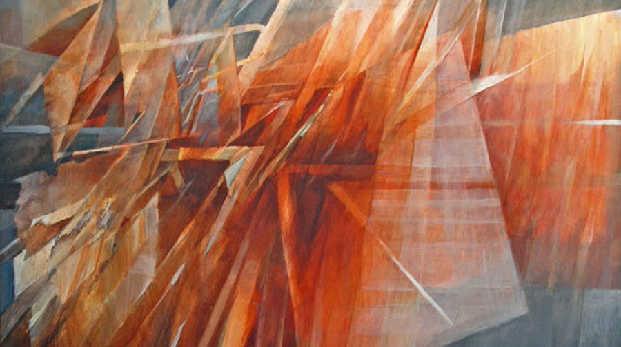

Yom Kippur prayer. New music interpretation
One of the most important prayers on Yom Kippur is Kol Nidre – All Vows. There are several music versions of this prayer. One of them is well known piece for cello and orchestra by Max Bruch (1838—1920)
Another modernistic interpretation was Arnold Schoenberg’s opus 39, for chorus and orchestra
(1938). You can read more about the meaning of this Jewish prayer here
Now I would like to present a completely new interpretation of this prayer written by messianic composer Daniel Kruglov. As about promises to God, I would remind you the most important promise our fathers had given to God in the Sinai desert approximately 35 hundreds years ago. The famous promise NAASEH V'NISHMA - we will do and we will hear.
Rochelle Blumenfeld

Ten hundreds years later approximately in the year 600 B.C. God had proclaimed the words of rebuke to us – to His people:
“I took them by the hand to lead them out of Egypt, because they broke my covenant, though I was a husband to them," declares the LORD.” (Jer.31:32)
We have violated our promise naaseh v'nishma. But Merciful God – El Malei Rahamim gave His promise to restore and to repair the whole situation, and even more. He promised to make a new covenant with the house of Israel and with the house of Judah.( Jer.31:31) He promises to write His law, His Torah on our hearts. (Jer.31:33)
This is the main concept of Daniel Kruglov music piece “Col Nidrei” – “All Vows”.
Music by Daniel Kruglov, performed by Daniel Kruglov, video by Ephraim Kalish, paintings by Rochelle Blumenfeld, Paul Jenkins, Stefan Fiedorovicz and others.
Music improvisation by Daniel Kruglov "The Gift of Creativity"
 The Jewish Attitude to the Feasts of the LORD
The Jewish Attitude to the Feasts of the LORD Daniel Libeskind's Sukkah. The Feast of Sukkot
Daniel Libeskind's Sukkah. The Feast of Sukkot Blessings on the Chanukah Menorah
Blessings on the Chanukah Menorah